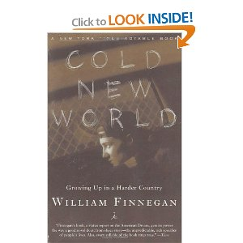

Hacking...

...on deadline.
What made it click for me was programming in anger. Programming because I needed to. Programming because I gave a damn about what I was writing and I wanted it done sooner rather than later.
— David Heinemeier Hansson
What made it click for me was programming journalism in anger. Programming Journalism because I needed to. Programming Journalism because I gave a damn about what I was writing and I wanted it done sooner rather than later.
"Always remember that the people you're going after can change their evil ways.
But if they don't, make the fuckers bleed."
— Conn "Ringo" Hallinan
Welcome to the Antelope Valley
Dad's advice:
"Never get too comfortable. Never be afraid to walk away."
Programming...
...attention.
Hacking...
...on deadline.
For all the neutral style and straight-ahead presentation, the Amicos’ greatest gift, as people inventing a new model of journalism, turns out to be their sense of humanity.
— Clay Shirky